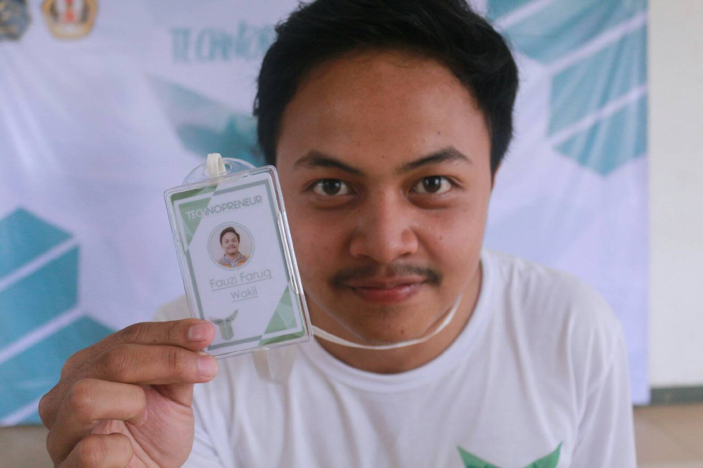

Berbagi Optimis Menebar Semangat
| My Biodata | |
|---|---|
|  | |
| Nama Lengkap | Fauzi Faruq Nabbani |
| Tempat Tanggal Lahir | 20 September 1997 |
| Jenis Kelamin | Laki-Laki |
| Alamat | Jl.Cipicung RT 06 RW 08 Kota Tasikmalaya |
| Status | Mahasiswa |
| Motto | Jangan Karena Mudah Kita Yakin Bisa, Tapi Karena Yakin Bisa Semua Akan Menjadi Mudah |
Setelah lulus dari SMP saya melanjutkan sekolah di SMAN 1 Kota Tasikmalaya,yang menurut kebanyakan orang sekolah ini merupakan sekolah terfavorit di Kota Tasikmalaya.Saat SMA banyak sekali hal-hal yang saya dapat , mulai dari pembentukan karakter, ilmu dan daya saing yang berkualitas serta kehidupan berorganisasi .Hal yang menarik dari SMA waktu itu adalah dimana sedang pada masa-masa memikirkan masa depan mulai dari perkuliahan dan karir, sehingga pada saat itu harus lah memantapkan rencana untuk kedepan nya dengan matang.Termasuk dalam menentukan perguruan tinggi, dan akhirnya atas bantuan dan dukungan guru-guru ,teman teman dan orang tua saya bisa lulus SMA dan melanjutkan pendidikan yang lebih tinggi ke Universitas Padjadjaran Jurusan Teknik Informatika lewat SNMPTN . Saya sangat bersyukur bisa lolos test perguruan tinggi lewat SNMPTN,karena banyak sekali orang-orang yang belum berhasil pada saat itu.Pada saat inilah saya harus bisa mengoptimalkan segala kemampuan saya di dunia kampus demi menggapai mimpi dan kehidupan yang sejahtera.Pada awal tahun kuliah, banyak hal yang baru ,dimulai menjalani kehidupan tanpa orang tua.Segala urusan menjadi dilakukan sendiri mulai dari bangun tidur,makan,cucian dll.Sudah saat nya memang hidup harus bisa mandiri jangan terus-terusan mengandalkan kedua orangtua.Di semester pertama saat itu mungkin sedang pada tahap adaptasi,berdaptasi dengan lingkungan , cara pembelajaran di kelas, dan kehidupan sosial di kampus.Dan tepatnya di tahun kedua saat ini harus sudah memantapkan diri , fokus terhadap apa yang diharapakan dan dicita-citakan.